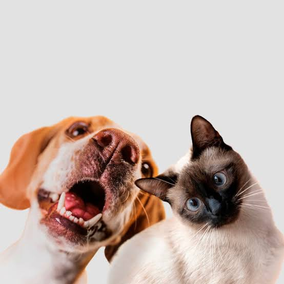

VET CLINIC
PERFIL
SELECCIONA LA CATEGORÍA DESEADA
Veterinarias Cercanas (Filtrar por categoría)
Todos
Perros
Gatos
Aves
MAPA (MUESTRA LAS VETERINARIAS MÁS CERCANAS)
MAPA INTERACTIVO
Consulta veterinaria
Vacunación
Desparasitación
Peluquería para mascotas
Esterilización
Rayos X
Análisis de laboratorio

Cirugía menor
Control de dermatología
Hospitalización y cuidado intensivo
×